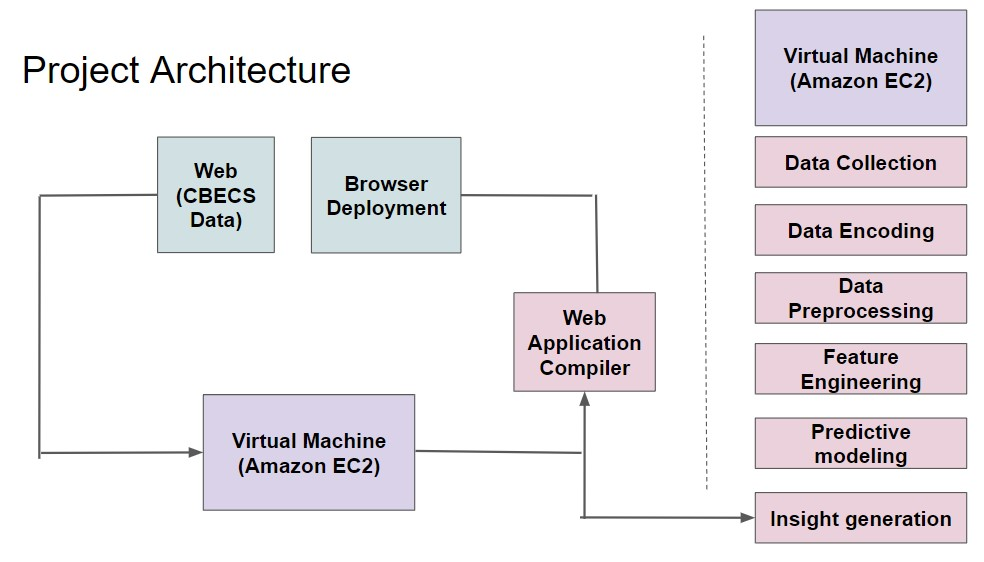

We are (hypothetically) providing the American Council for an Energy Efficient Economy (ACEEE) with insights to inform their advocacy efforts, based on the Commercial Building Energy Consumption Survey (CBECS). These insights will enable the organization to maximize their impact, yielding more energy savings per dollar spent on advocacy. The purpose is to ultimately reduce the carbon footprint of commercial buildings, as all buildings (commercial and residential) are responsible for 32% of greenhouse gas emissions in the U.S.
Leverage dimensionality reduction techniques to extract only the features which account for a significant proportion of the variance in the data. Then apply predictive modeling techniques to select an optimal model and predict 2018 commercial building total energy consumption.
{% endblock %} {% block chart_content %}  {% endblock %}